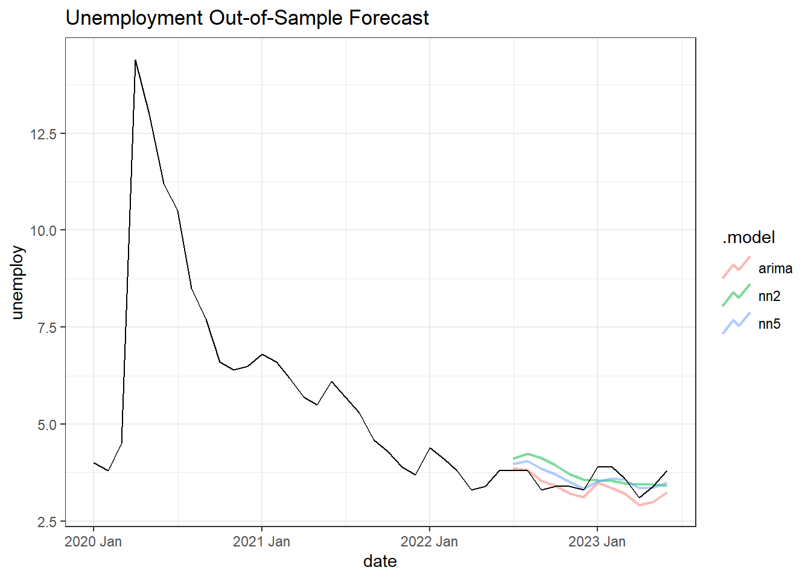

This week I’ll be getting two series from FRED, the non-seasonally-adjusted unemployment rate and a consumer sentiment index by the University of Michigan. Because we saw such a massive spike in unemployment during the onset of COVID-19, I’ll add some dummy variables to help mitigate impacts to the model on the forecast period.
I’m estimating three models, two neural networks and an ARIMA as a comparison. The neural networks are identical except the number of nodes selected, 2 versus 5. All the models have the same transformations and regressors. I did have some issues with getting the appropriate seasonality to be displayed in the forecast, though I noticed that including more nodes typically resulted in better seasonality (but worse forecasts).
# A mable: 1 x 3
arima nn2 nn5
<model> <model> <model>
1 <LM w/ ARIMA(0,1,2)(1,0,0)[12] errors> <NNAR(2,2,2)[12]> <NNAR(2,2,5)[12]>
Forecast
The models were trained on data prior to 2022-07-01. The forecast period is the interval 2022-07-01 UTC–2023-06-01 UTC.
Huge tip if your forecast() function takes a long time to generate: include the times parameter and set it to a lower value. Since there’s randomness involved, it’ll add more volatility to the forecast but at least a happy-medium can be found. Source
fx %>%autoplot( data %>%filter(year(date) >2019),level =NULL, size = .75, alpha = .5 ) +ggtitle("Unemployment Out-of-Sample Forecast") +scale_y_continuous(labels =label_comma())

The 5-node NN does achieve the best results on this test set. It doesn’t look too far off from the 2-node, but captures the seasonality much better.
Code
fx %>%accuracy(test)
# A tibble: 3 × 10
.model .type ME RMSE MAE MPE MAPE MASE RMSSE ACF1
<chr> <chr> <dbl> <dbl> <dbl> <dbl> <dbl> <dbl> <dbl> <dbl>
1 arima Test 0.212 0.323 0.265 5.79 7.36 NaN NaN 0.624
2 nn2 Test -0.155 0.405 0.359 -4.88 10.2 NaN NaN 0.539
3 nn5 Test -0.0507 0.272 0.227 -1.78 6.37 NaN NaN 0.524